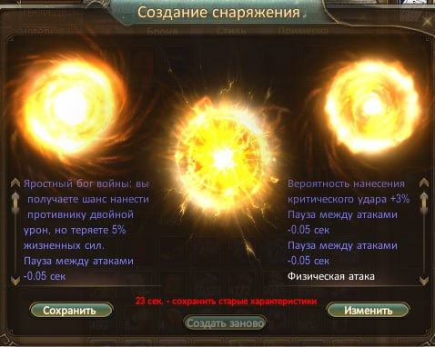

Обо мне
Привет! Я любитель Татарстана, его истории, природы и атмосферы. Обожаю гулять по Казани, открывать для себя новые места и национальную кухню.
Ещё одна важная часть моей жизни — игра Perfect World. Для меня это способ отвлечься, пообщаться с друзьями и пережить яркие виртуальные приключения.
4 раза выбил крит дабл пауза.
Татарстан в моём сердце
Казань
Город, где переплетаются история и современность: Казанский Кремль, набережная Казанки, уютные улочки с национальным колоритом и современная архитектура.
Природа и уют
Спокойные реки, зелёные леса, тёплые летние вечера и зимние прогулки — всё это создаёт особое, тёплое настроение, к которому хочется возвращаться.
Кухня
Эчпочмаки, кыстыбый, губадия, татарский чай — вкусы, которые невозможно забыть. О них легко писать целые отдельные посты.
Мой путь в Perfect World
Perfect World для меня — это мир, где можно быть кем угодно: воином, магом, исследователем или спокойным путешественником. Здесь я люблю проходить данжи, собирать редкий лут и участвовать в массовых событиях.
- Любимый стиль игры: PvE, спокойное развитие персонажа и изучение мира.
- Интересы в игре: сюжетные квесты, красивые локации, совместные вылазки с друзьями.
- Настроение: без спешки, для души — как виртуальное путешествие после настоящего дня.